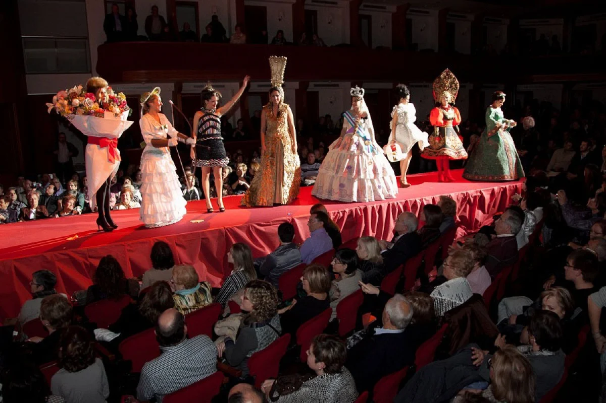

El Concurs de Vestits de Paper de Mollerussa arriba a la 59a edició amb 57 peces
La periodista Maria Xinxó conduirà la gala al Teatre L'Amistat i les entrades fa un mes que estan exhaurides
El 59è Concurs de Vestits de Paper de Mollerussa, que tindrà lloc aquest dissabte dia 16 a les 10 de la nit al Teatre L'Amistat, comptarà amb un total de 57 participants procedents d'arreu de Catalunya i de diferents indrets de la geografia espanyola com Astúries i el País Basc.
D'aquests, 22 concursants participaran en la categoria de Moda Actual, 17 a Fantasia i 18 a Època. La periodista i escriptora, Maria Xinxó serà l'encarregada de conduir la gala, on també hi actuarà el duet musical Two Hearts. Les entrades per assistir-hi estan exhaurides des de fa gairebé un mes. Tot i això, el concurs tornarà un any més a acostar-se a tota la ciutadania a través de l'exposició urbana amb una dotzena de peces que s'inaugura aquest dimecres.
La mostra al centre de la ciutat es pot veure fins al 8 de gener. Inclou una dotzena de vestits que s'exposen en vitrines de vidre il·luminades de dos metres d'alçada. És la quarta edició que el concurs surt al carrer. Aquesta iniciativa es va iniciar el 2020 quan es va haver de suspendre el certamen a causa de la pandèmia. Les peces escollides són vestits que han estat premiats en el marc de les diferents edicions del concurs i són una mostra representativa de les modistes que han participat al llarg d'aquests anys.
Portugal porta una mostra de deu vestits
D'altra banda, aquesta mostra es complementarà amb l'exhibició d'una desena de vestits de paper procedents del districte de Foz do Douro de Porto, a Portugal, en el marc de la col·laboració amb aquest país per impulsar la candidatura en la qual s'està treballant juntament amb Amposta i amb Güeñes, al País Basc, perquè aquesta manifestació cultural i artística obtingui la distinció de Patrimoni Immaterial per part de la UNESCO.